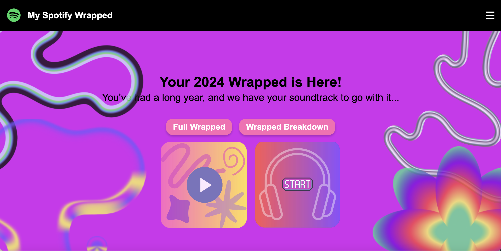

The goal of this project is to design and develop a Spotify listening statistics summary website similar to Spotify Wrapped using Django and the Spotify API.
Description
Spotify Wrapped is a web application that allows users to view their music listening habits in a fun customizable way. Some features that we have implemented include fun games based on your listening history, viewing wraps over different lengths of time, and being able to choose a unique color theme to view the site in.
Team Presentation
Our team consists of 5 Georgia Tech sophomores. Each member is responsible for different features of the website and has contributed uniquely.
Stuthi Bhat
Stuthi is responsible for full-stack development, testing of the project, and the team website. Individual contributions include the carousel function and settings page.
Jordyn Hemphill
Jordyn is responsible for backend development and project deployment, she is also the scrum master. Individual contributions include the login and language functionality.
Maya Blair
Maya created the design and user experience for the platform, and also contributed to front-end development. Individual contributions include the login and language functionality.
Raymond Liu
Raymond is responsible for backend development and the overall vision of the product. Individual contributions include the save wraps and listen to top tracks features.
Jesseca McNair
Jesseca handles both front-end and back-end development as a full-stack developer. Her individual contribution to the website is the game page of the application.
Spotify Wrapped Application
The Spotify Wrapped application is designed to make it simple and fun for a user to learn more about their music listening habits. The CSS is designed to be cohesive with the website and the layout is made so that users can easily access their account and view a professional interface. More about the specific pages, user stories, is detailed below.

Process Description
Our team followed the Scrum methodology for project management. We held regular sprints and meetings to ensure that our project stayed on track. We relied on a daily standup to know what our team members were working on and keep everyone accountable. We had different phases of our website development including planning (creating figmas, user story mockups), implementation, testing, and deployment.
User Stories
A. User Individuality:
As a user, I want to be able to view a presentation of the different aspects of my personal Spotify listening tastes displayed in fun and colorful ways.
I want to be able to see my listening habits displayed in a slide manner with transitions and fun effects.
B. User Authentication:
As a registered user, I want to log in so that I can access my profile and account data.
As a user, I want to see a screen where I can see my saved Spotify wraps.
As a user, I want to be able to delete my account.
C. Aesthetic, Responsive UI:
As a user, I want to be able to view this application on different laptop/monitor sizes.
As a user, I want to view my information in a design that is aesthetically pleasing.
Demo Video
Watch the demo of our web app by clicking the link below: